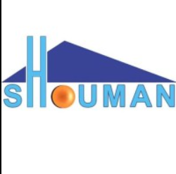

Mechanical Design Engineer at:
- at Shouman Company for Plastic Industries.
- September 2015 to October 2016
- New Damietta, Egypt
- Designing the mechanical parts of the plastic
production machine and manufacturing the part using CNC
Milling machines, and assembling it.
- Performing the mechanical design parts using Catia, then
loading the designed part on MasterCam generating the G-code
to be recognized by the CNC machine.
Shouman Company
